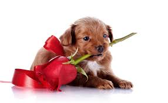
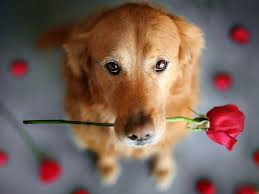
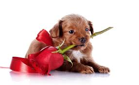
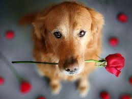

Es importante que los animales sientan amor y hasta pueden llegar a ser una alegria para nosotros , nos darian compañia y debemos marcar la diferencia y no solo hacemos referencia a los animales si no y estos animales pueden llegar a cambiar nuestra vida dandole mas color Llegara un día en que los hombres como yo, verán el asesinato de un animal como ahora ven el de un hombre. Es increíble y vergonzoso que ni predicadores ni moralistas eleven más su voz contra los abusos hacia los animales. Cuando un hombre se apiade de todas las criaturas vivientes, solo entonces será noble. A veces me preguntan: ¿Por qué inviertes todo ese tiempo y dinero hablando de la amabilidad para con los animales, cuando existe tanta crueldad hacia el hombre?. A lo que yo respondo: Estoy trabajando en las raíces. El hecho simple de que mi perro me quiere más que yo a él constituye una realidad tan innegable que, cada vez que pienso en ella, me avergüenzo.